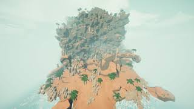
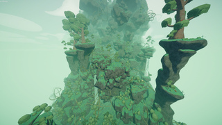
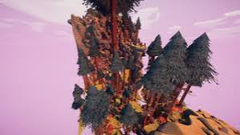
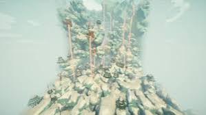
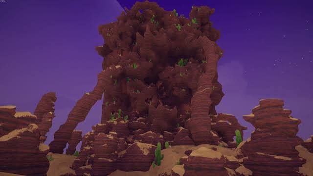
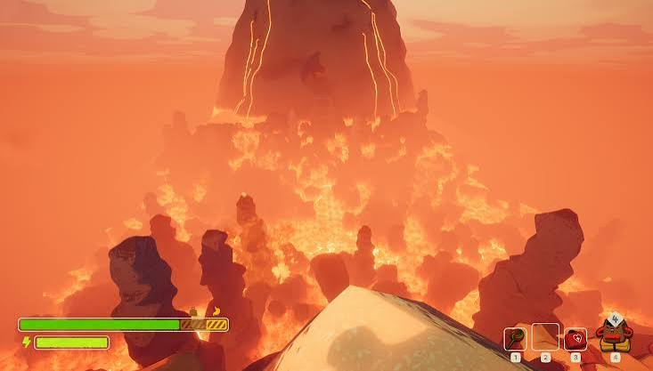
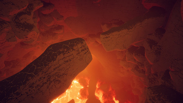
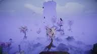
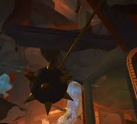
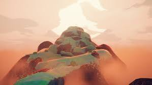

Different Biomes of Peak
This section will introduce the various biomes found in the game.
Biome 1: The Shore

The 1st areas biome is the shore. You will spawn at a plane crash and must make your way towards the mountain ahead. The mountain is relatively easy to scale once you understand the base mechanics of the game.
Biomes 2: The Tropics and the Roots


The 2nd areas biome and the biomes after can vary between 2 options each day. The 1st is the Tropics. this poisonous vine ridden jungle scales quickly and is difficult to navigate for first timers due to the constant raining making climbing impossible. The 2nd is the Roots, this mushroom filled area is easier to scale, but has more unique dangers such as high winds that push you around, spores that can drain your stamina, and even a zombie that will chase you down.
Biomes 3: The Alpines and the Mesa


The 3rd areas biome is the Alpines, a harsh frozen environment forcing you to scale a tundra during constant snowstorms. The other variant is the Mesa, a scalding desert where the sun cooks you alive with tornados and tumbleweeds thrashing you into cacti at every given turn. This leads you into an upward climb making you dodge scorpions and dynamite.
Biomes 4: The Caldera/Kiln and the Gloom/Citadel




The 4th areas are unique because each one leads you into a guaranteed 5th area. The first is Caldera, a lava ridden wasteland that you have to tredge across while avoiding the rising and falling tides of lava hopping from rock to rock. There are also birds that can grab you and take you to high pillars where they have their nests. At the end of Caldera, you will find the entrance to the Kiln. The Kiln is an active volcano that will slowly fill with lava chasing you as you climb to the top from the inside. The other variant is the Gloom, a haven of fog that will put you to sleep. As you navigate the fog looking for high rocks or trees for breaks, you have to be wary of frogs that will pull you and ghosts that will send you flying. Once you make it to the end of the Gloom, you will find the entrance to the Citadel. The Citadel is abundant with traps but also much easier to climb.
Biome 5: The Peak/Nadir

The Final Biomes after the 4th area is the Peak. Here you simply call the rescue helicopter and win your run. Alternatively, if you picked up 4 special badges across the different areas, you will be able to travel to Nadir and save the scoutmaster's soul before returning to the peak.